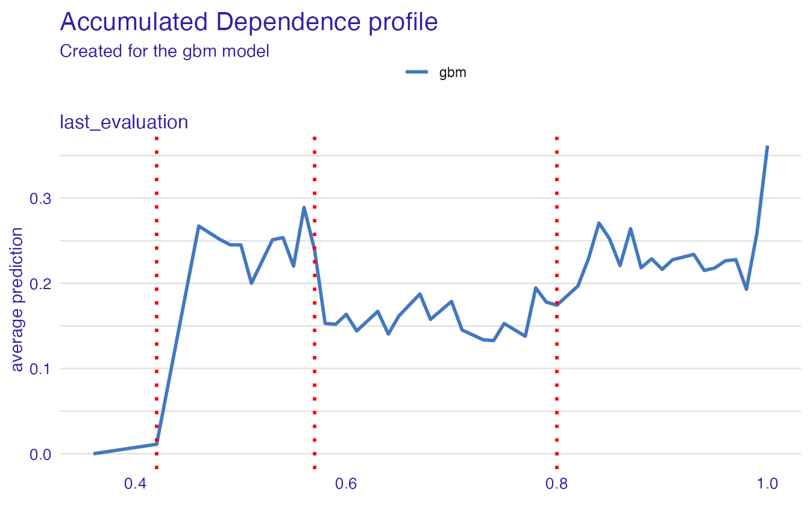

Classification example - HR data
Anna Gierlak
2020-07-01
Source:vignettes/example_hr.Rmd
example_hr.RmdIn this vignette we demonstrate an application of the rSAFE package to the HR_data set. The dataset contains information from a Human Resources department about employees and may be used in the classification task of predicting whether an employee is likely to leave the company. The data comes from the Kaggle competition “Human Resources Analytics” and is available in breakDown and rSAFE packages.
library(rSAFE) head(HR_data) #> satisfaction_level last_evaluation number_project average_montly_hours #> 1 0.38 0.53 2 157 #> 2 0.80 0.86 5 262 #> 3 0.11 0.88 7 272 #> 4 0.72 0.87 5 223 #> 5 0.37 0.52 2 159 #> 6 0.41 0.50 2 153 #> time_spend_company Work_accident left promotion_last_5years sales salary #> 1 3 0 1 0 sales low #> 2 6 0 1 0 sales medium #> 3 4 0 1 0 sales medium #> 4 5 0 1 0 sales low #> 5 3 0 1 0 sales low #> 6 3 0 1 0 sales low
As explanatory variables we use all available in the dataset except for which specifies department in which the employee works for.
data <- HR_data[, colnames(HR_data) != "sales"]
In order to ensure the final errors are computed on the data which has not been seen by an approproate model, we divide our data as follows:
-
data1- the data which initial black-box and white-box models are fitted to, -
data2- the data used to create anexplainerand asafe_extractorfor black-box model from the previous point, serving also as a test data, -
data3- the data for which transformations and feature selection are performed, used also as a training set for new models, -
data4- the data used as a test set for the new models, allowing to compare the results. Before splitting the data, we first shuffle rows to ensure they are evenly distributed.
set.seed(111) data <- data[sample(1:nrow(data)),] data1 <- data[1:4000,] data2 <- data[4001:8000,] data3 <- data[8001:12000,] data4 <- data[12001:14999,]
Building a black-box model
In this example we decide to use the xgboost model as a black-box - it will serve us as a surrogate.
Creating an explainer
We also create an explainer object that will be used later to create new variables. For classification problems we need to specify predict_function - a function that may be used for model predictions and returns a single numerical value for each observation.
Creating a safe_extractor
Now, we create a safe_extractor object using rSAFE package and our surrogate model. Setting the argument verbose=FALSE stops progress bar from printing.
safe_extractor <- safe_extraction(explainer_xgb1, penalty = 20, verbose = FALSE)
Now, let’s print summary for the new object we have just created.
print(safe_extractor) #> Variable 'satisfaction_level' - selected intervals: #> (-Inf, 0.12] #> (0.12, 0.28] #> (0.28, 0.45] #> (0.45, Inf) #> Variable 'last_evaluation' - selected intervals: #> (-Inf, 0.42] #> (0.42, 0.57] #> (0.57, 0.8] #> (0.8, Inf) #> Variable 'number_project' - selected intervals: #> (-Inf, 4] #> (4, Inf) #> Variable 'average_montly_hours' - selected intervals: #> (-Inf, 115.6122] #> (115.6122, 160] #> (160, 214] #> (214, Inf) #> Variable 'time_spend_company' - selected intervals: #> (-Inf, 3] #> (3, Inf) #> Variable 'Work_accident' - no transformation suggested. #> Variable 'promotion_last_5years' - no transformation suggested. #> Variable 'salary' - created levels: #> high -> high #> low, medium -> low_medium
We can see transormation propositions for all variables in our dataset.
In the plot below we can see which points have been chosen to be the breakpoints for a particular variable:
plot(safe_extractor, variable = "last_evaluation")

For factor variables we can observe in which order levels have been merged and what is the optimal clustering:
plot(safe_extractor, variable = "salary")

Transforming data
Now we can use our safe_extractor object to create new categorical features in the given dataset.
data3_trans <- safely_transform_data(safe_extractor, data3, verbose = FALSE)
| salary | satisfaction_level | last_evaluation | number_project | average_montly_hours | time_spend_company | Work_accident | left | promotion_last_5years | satisfaction_level_new | last_evaluation_new | number_project_new | average_montly_hours_new | time_spend_company_new | salary_new |
|---|---|---|---|---|---|---|---|---|---|---|---|---|---|---|
| low | 0.78 | 0.77 | 2 | 177 | 4 | 0 | 0 | 0 | (0.45, Inf) | (0.57, 0.8] | (-Inf, 4] | (160, 214] | (3, Inf) | low_medium |
| low | 0.87 | 0.94 | 5 | 219 | 5 | 0 | 1 | 0 | (0.45, Inf) | (0.8, Inf) | (4, Inf) | (214, Inf) | (3, Inf) | low_medium |
| medium | 0.85 | 1.00 | 5 | 244 | 2 | 0 | 0 | 0 | (0.45, Inf) | (0.8, Inf) | (4, Inf) | (214, Inf) | (-Inf, 3] | low_medium |
| medium | 0.24 | 0.46 | 7 | 224 | 5 | 0 | 1 | 0 | (0.12, 0.28] | (0.42, 0.57] | (4, Inf) | (214, Inf) | (3, Inf) | low_medium |
| low | 0.81 | 0.49 | 4 | 285 | 4 | 0 | 0 | 0 | (0.45, Inf) | (0.42, 0.57] | (-Inf, 4] | (214, Inf) | (3, Inf) | low_medium |
| high | 0.72 | 0.84 | 2 | 173 | 2 | 1 | 0 | 0 | (0.45, Inf) | (0.8, Inf) | (-Inf, 4] | (160, 214] | (-Inf, 3] | high |
We can also perform feature selection if we wish. For each original feature it keeps exactly one of their forms - original one or transformed one.
selected_variables <- safely_select_variables(safe_extractor, data3_trans, which_y = "left", verbose = FALSE) data3_trans_sel <- data3_trans[,c("left", selected_variables)] print(selected_variables) #> [1] "Work_accident" "promotion_last_5years" #> [3] "salary" "satisfaction_level_new" #> [5] "last_evaluation_new" "number_project_new" #> [7] "average_montly_hours_new" "time_spend_company_new"
It can be observed that for some features the original form was preffered and for others the transformed one.
Here are the first few rows for our data after feature selection:
| left | Work_accident | promotion_last_5years | salary | satisfaction_level_new | last_evaluation_new | number_project_new | average_montly_hours_new | time_spend_company_new |
|---|---|---|---|---|---|---|---|---|
| 0 | 0 | 0 | low | (0.45, Inf) | (0.57, 0.8] | (-Inf, 4] | (160, 214] | (3, Inf) |
| 1 | 0 | 0 | low | (0.45, Inf) | (0.8, Inf) | (4, Inf) | (214, Inf) | (3, Inf) |
| 0 | 0 | 0 | medium | (0.45, Inf) | (0.8, Inf) | (4, Inf) | (214, Inf) | (-Inf, 3] |
| 1 | 0 | 0 | medium | (0.12, 0.28] | (0.42, 0.57] | (4, Inf) | (214, Inf) | (3, Inf) |
| 0 | 0 | 0 | low | (0.45, Inf) | (0.42, 0.57] | (-Inf, 4] | (214, Inf) | (3, Inf) |
| 0 | 1 | 0 | high | (0.45, Inf) | (0.8, Inf) | (-Inf, 4] | (160, 214] | (-Inf, 3] |
Now, we perform transformations on another data that will be used later to compare models performance.
data4_trans <- safely_transform_data(safe_extractor, data4, verbose = FALSE) data4_trans_sel <- data4_trans[,c("left", selected_variables)]
Creating white-box models on original and transformed datasets
Let’s fit the models to data containg newly created columns. We consider a generalized linear model (glm) as a white-box model.
model_lr2 <- glm(left ~ ., data = data3_trans_sel, family = binomial()) set.seed(111) model_xgb2 <- gbm(left ~ ., data = data3_trans_sel, distribution = "bernoulli", n.trees = n.trees)
Moreover, we create a glm model based on original data in order to check if our methodology improves results.
Comparing models performance
Final step is the comparison of all four models we have created. For each of them we make predictions on the relevant test set, i.e. we use model_lr1 and model_xgb1 to predict the output for data2 and model_lr2 and model_xgb2 to predict the output for data4.
pred_lr1 <- round(predict(model_lr1, data2, type = "response")) pred_xgb1 <- round(predict(model_xgb1, data2, n.trees = n.trees, type = "response")) pred_lr2 <- round(predict(model_lr2, data4_trans_sel, type = "response")) pred_xgb2 <- round(predict(model_xgb2, data4_trans_sel, n.trees = n.trees, type = "response"))
The performance of the models may then be evaluated based on confusion matrices with relative percentages obtained via the confusion_matrix function:
confusion_matrix <- function(y_true, y_pred) { cm <- data.frame(pred_0 = c(sum(y_true==0 & y_pred==0)/sum(y_true==0), sum(y_true==1 & y_pred==0)/sum(y_true==1)), pred_1 = c(sum(y_true==0 & y_pred==1)/sum(y_true==0), sum(y_true==1 & y_pred==1)/sum(y_true==1))) cm <- apply(cm, MARGIN = 2, function(x) round(x, 2)) rownames(cm) <- c("actual_0", "actual_1") cm }
Xgboost models give the following results:
- for the original data:
| predicted 0 | predicted 1 | |
|---|---|---|
| actual 0 | 0.97 | 0.03 |
| actual 1 | 0.09 | 0.91 |
- for the data with
rSAFEtransformations applied:
| predicted 0 | predicted 1 | |
|---|---|---|
| actual 0 | 0.93 | 0.07 |
| actual 1 | 0.27 | 0.73 |
The model trained on original data has higher predictive power - feature transformations have caused the loss of valuable information which was apparently used by the first model. However, within logistic regression models the significant improvement can be observed:
- for the original data:
| predicted 0 | predicted 1 | |
|---|---|---|
| actual 0 | 0.92 | 0.08 |
| actual 1 | 0.63 | 0.37 |
- for the data with
rSAFEtransformations applied:
| predicted 0 | predicted 1 | |
|---|---|---|
| actual 0 | 0.93 | 0.07 |
| actual 1 | 0.27 | 0.73 |
The initial logistic regression model has difficulties with “true negatives” - for employees that actually quit it very often predicts the opposite. On the other hand, model_lr2 which was trained on the set of features modified by the SAFE algorithm has much better accuracy.